温故知新
推荐一本书 —《网络是怎样连接的》本系列为学习该书📚的学习汇总
同时会包含一些补充
完整内容可购买阅读相关该📚
目标
- 回顾 HTTP 请求消息
- 掌握 ip地址、子网掩码、子网的计算
目录

接下来会围绕第一章进行学习
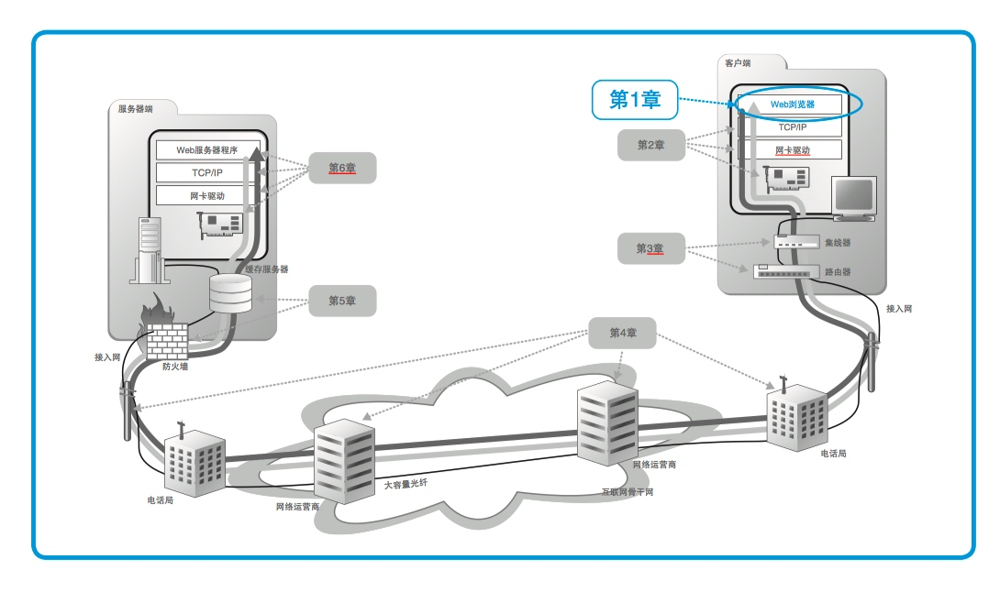
第一部分 整体概述
HTTP 请求消息
URL： Uniform Resource Locator，统一资源定位符。
FTP： File Transfer Protocol， 文件传送协议。 这是一种在上传、下载文件时使用的协议。使用 FTP 协议来传送文件的程序也被叫作 FTP。
常见的URL分类
日常用的最多的是HTTP： Hypertext Transfer Protocol，超文本传送协议, 但也有其他一些，如下图：
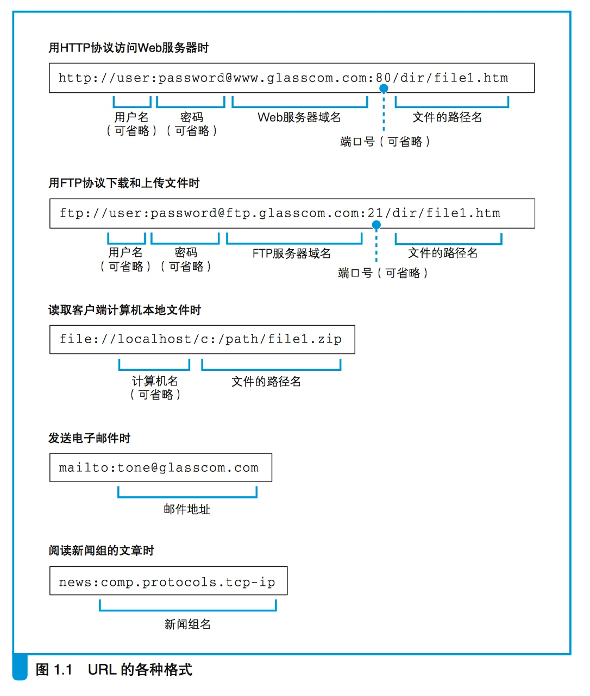
http协议
HTTP 协议定义了客户端和服务器之间交互的消息内容和步骤。
大致过程如下，客户端请求，服务器返回相应的数据。

如何访问服务器中，特定的资源？看下边的URL图解
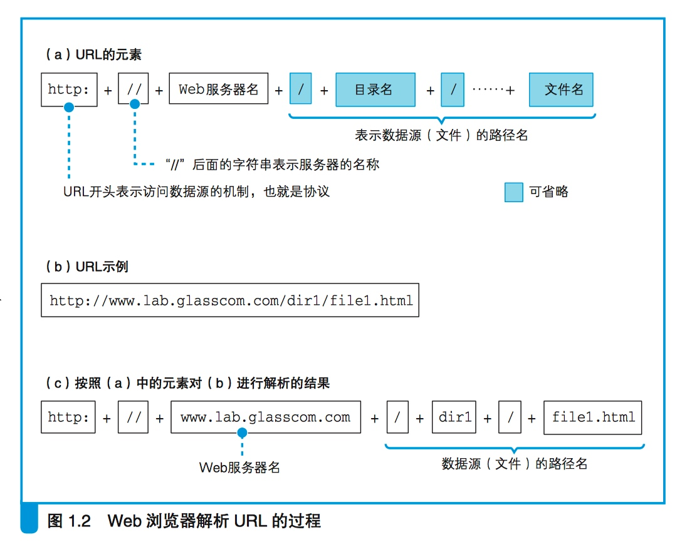
主要方法
有了整体的大致流程，也有了拆分URL的图解，就看下有哪些方法吧，浏览器访问属于GET.

URI： Uniform Resource Identifier，统一资源标识符。


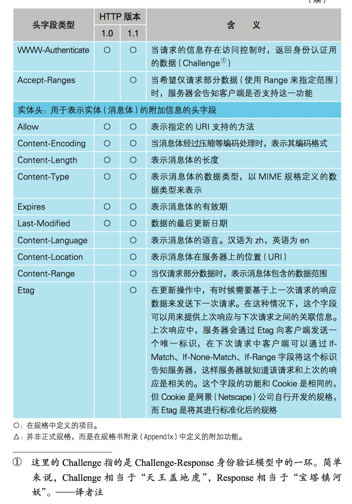

第二部分 IP地址
该部分摘录自《IP地址详解》，详情请参看原文。
IP地址分类
IP地址（Internet Protocol Address），缩写为IP Adress，是一种在Internet上的给主机统一编址的地址格式，也称为网络协议（IP协议）地址。它为互联网上的每一个网络和每一台主机分配一个逻辑地址，常见的IP地址，分为IPv4与IPv6两大类，当前广泛应用的是IPv4，目前IPv4几乎耗尽，下一阶段必然会进行版本升级到IPv6；如无特别注明，一般我们讲的的IP地址所指的是IPv4。

IP地址分A、B、C、D、E五类，其中A、B、C这三类是比较常用的IP地址，D、E类为特殊地址。
IP 地址是一串 32 比特的数字，按照 8 比特（1 字节）为一组分成 4 组，分别用十进制表示 然后再用圆点隔开。
在计算机二进制中，1个字节 = 8位 = 8bit（比特）
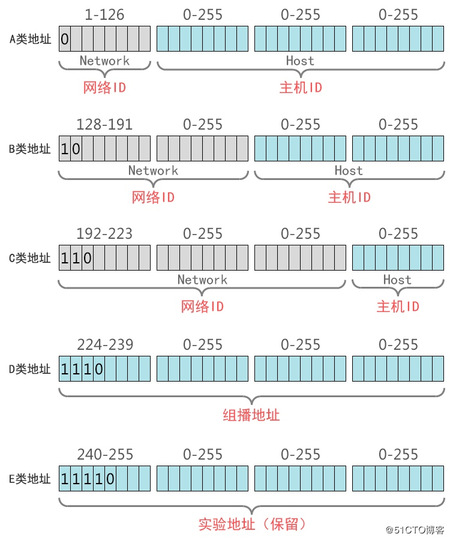
Ip地址汇总
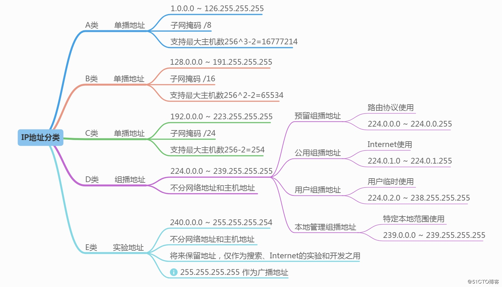
注： 为何减去2？
在计算机网络中，主机ID全部为0的地址为网络地址，而主机ID全部为1的地址为广播地址，这2个地址是不能分配给主机用的。
公网和私网IP地址
公网IP地址
公有地址分配和管理由Inter NIC（Internet Network Information Center 因特网信息中心）负责。各级ISP使用的公网地址都需要向Inter NIC提出申请，有Inter NIC统一发放，这样就能确保地址块不冲突。
私网IP地址
创建IP寻址方案的人也创建了私网IP地址。这些地址可以被用于私有网络，在Internet没有这些IP地址，Internet上的路由器也没有到私有网络的路由表。
A类：10.0.0.0 255.0.0.0，保留了1个A类网络。 |
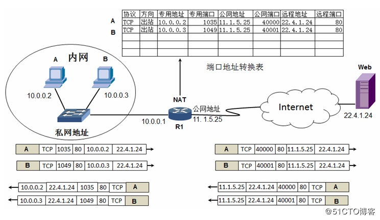
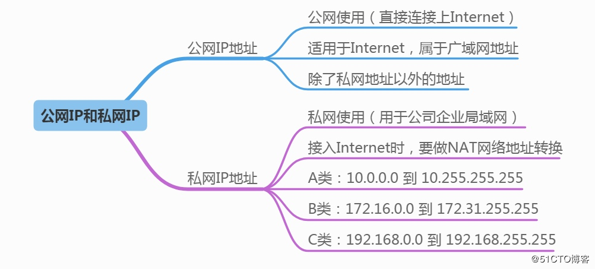
子网掩码
引子
IP地址在设计时就考虑到地址分配的层次特点，将每个IP地址都分割成网络号和主机号两部分，以便于IP地址的寻址操作。
如何确定：IP地址的网络号和主机号各是多少位呢？
那就了解下子网掩码
定义
子网掩码(subnet mask)是每个使用互联网的人必须要掌握的基础知识，只有掌握它，才能够真正理解TCP/IP协议的设置。
子网掩码——屏蔽一个IP地址的网络部分的“全1”比特模式。对于A类地址来说，默认的子网掩码是255.0.0.0；对于B类地址来说默认的子网掩码是255.255.0.0；对于C类地址来说默认的子网掩码是255.255.255.0。
利用子网掩码可以把大的网络划分成子网，即VLSM（可变长子网掩码），也可以把小的网络归并成大的网络即超网。
规则
子网掩码的长度也是32位，左边是网络位，用二进制数字“1”表示，1的数目等于网络位的长度；右边是主机位，用二进制数字“0”表示，0的数目等于主机位的长度。
目的： 是为了让掩码与ip地址做按位与运算时用0遮住原主机数，而不改变原网络段数字，而且很容易通过0的位数确定子网的主机数
为何要用子网掩码？
子网掩码可以分离出IP地址中的
网络地址和主机地址，那为什么要分离呢？
因为两台计算机要通讯，首先要判断是否处于同一个广播域内，即网络地址是否相同。
如果网络地址相同，表明接受方在本网络上，那么可以把数据包直接发送到目标主机，
否则就需要路由网关将数据包转发送到目的地。
设IP地址为192.168.10.2，子网掩码为255.255.255.240，那么子网掩码是怎样来区分网络地址和主机地址的呢。
主机地址为：0.0.0.2（将掩码取反，然后与运算）
子网掩码和ip地址的关系
子网掩码是用来判断任意两台计算机的IP地址是否属于同一子网络的根据。
And按位与运算： |
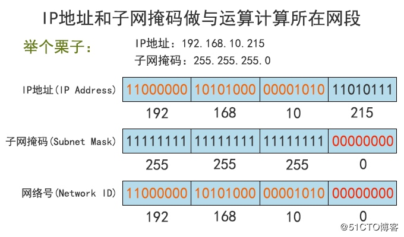
网络地址计算小技巧：IP地址和子网掩码做与运算，把IP地址的主机位直接归0，就快速得到网络地址。所以只要一看到IP地址和子网掩码，就能马上确认网络地址。
子网掩码的表示方法
①、点分十进制表示法
二进制转换十进制，每8位用点号隔开
例如：子网掩码二进制11111111.11111111.11111111.00000000，表示为255.255.255.0
②、CIDR斜线记法
IP地址/n
例1：192.168.1.100/24，其子网掩码表示为255.255.255.0，二进制表示为11111111.11111111.11111111.00000000
例2：172.16.198.12/20，其子网掩码表示为255.255.240.0，二进制表示为11111111.11111111.11110000.00000000
不难发现，例1中共有24个１，例2中共有20个１，所以n是这么来的。运营商ISP常用这样的方法给客户分配IP地址。
注：n为1到32的数字，表示子网掩码中网络号的长度，通过n的个数确定子网的主机数=2^(32-n)-2（-2的原因：主机位全为0时表示本网络的网络地址，主机位全为1时表示本网络的广播地址，这是两个特殊地址）。
做子网划分后的IP地址：网络号＋子网号＋子网主机号
举个栗子：
如：192.168.1.100/25，其子网掩码表示：255.255.255.128
子网
子网划分是通过借用IP地址中若干位【主机地址】来充当子网的【网络地址】，从而将原网络划分为若干子网。
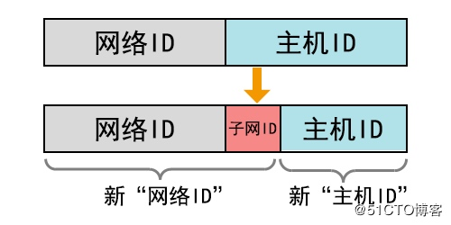
划分子网时，随着子网地址借用主机位数的增多，子网的数目随之增加，但每个子网中的可用主机数逐渐减少。
如C类地址，原有8位主机位，2^8-2即254个主机地址，默认子网掩码255.255.255.0。(全0或全1不可用）
借用1位主机位，产生2^1-2=0个子网，每个子网有2^7-2个主机地址； |
计算子网掩码
根据子网数
根据子网数，计算子网掩码
1)将子网数目转化为二进制来表示 |
如欲将B类IP地址168.195.0.0划分成27个子网：
1)27=11011
2)该二进制为五位数，N = 5
3)将B类地址的子网掩码255.255.0.0的主机地址前5位置1（B类地址的主机位包括后两个字节，所以这里要把第三个字节的前5位置1），得到 255.255.248.0
即为划分成27个子网的B类IP地址 168.195.0.0的子网掩码（实际上是划成了32-2=30个子网）。
10101000 11000011 00000000 00000000
11111111 11111111 00000000 00000000
11111111 11111111 11111000 00000000
11111111 11111111 11111000 00000000
根据主机数
1. 根据主机数计算子网掩码 |
根据主机数计算子网掩码
把B类地址172.16.0.0划分成若干子网络，每个子网络能容纳500台主机，它的子网掩码是多少？
①把500转换成二进制表示111110100
②统计一下这个二进制的数共有9位
③将子网掩码255.255.255.255从后向前的9位变成0
④这就得到了所要的子网掩码（11111111.11111111.11111110.00000000）255.255.254.0。
根据子网掩码计算子网数
A类IP地址，子网掩码为255.224.0.0，它所能划分的最大有效子网数是多少？
①将子网掩码转换成二进制表示11111111.11100000.00000000.00000000
②统计一下它的网络位共有11位
③A类地址网络位的基础数是8，二者之间的位数差是3
④最大有效子网数就是2的3次方，即最多可以划分8个子网络。
2的位数差次方
根据子网掩码计算主机数
A类IP地址，子网掩码为255.252.0.0，将它划分成若干子网络，每个子网络中可用主机数有多少？
①将子网掩码转换成二进制表示11111111.11111100.00000000.00000000
②统计一下它的主机位共有18位
③最大可用主机数就是2的18次方减2（除去全是0的网络地址和全是1广播地址），即每个子网络最多有262142台主机可用。
2的主机号长度次方
根据子网掩码确定子网络的起止地址
B类IP地址172.16.0.0，子网掩码为255.255.192.0，它所能划分的子网络起止地址是多少？
11111111 11111111 11000000 00000000 [255.255.192.0]
11111111 11111111 00000000 00000000 [255.255.255.0]
①利用子网掩码计算，最多可以划分4个子网络,【差两位，2的2次方=4】
②利用子网掩码计算，每个子网络可容纳16384台主机（包括网络地址和广播地址）【2的14次方-2】
③用16384除以256（网段内包括网络地址和广播地址的全部主机数），结果是64
④具体划分网络起止方法如下：
172.16.0.0～172.16.63.255
172.16.64.0～172.16.127.255
172.16.128.0～172.16.191.255
172.16.192.0～172.16.255.255
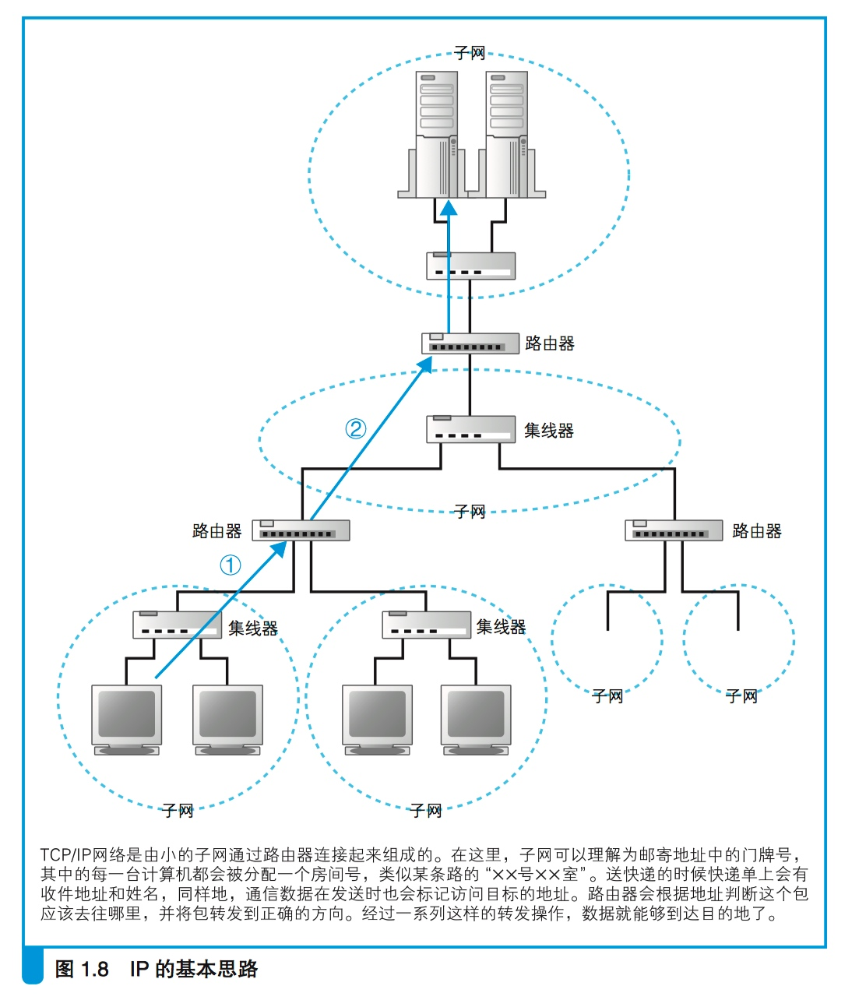
推荐阅读【参考链接】：
IP地址和子网划分学习笔记之《IP地址详解》系列
什么是子网？什么是子网掩码？
百度百科—子网划分
子网数、主机数与子网掩码的关系